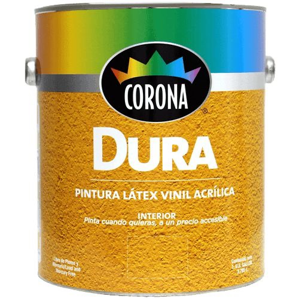
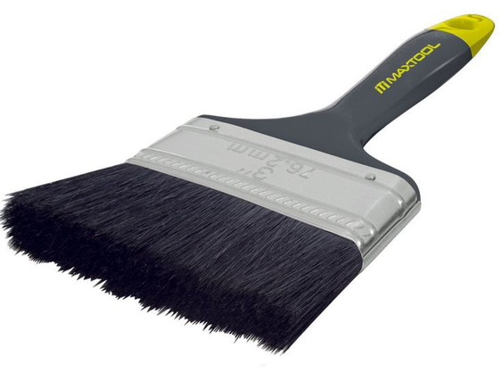
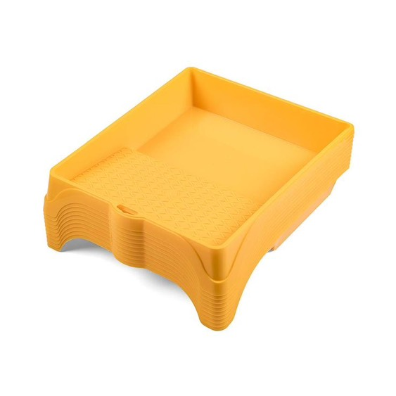

Pinturas

Pintura del color que desee

Brochas

Bandeja de pintura
🌿🌱 Descubre Más Herramientas de Jardinería
A continuación, encontrarás nuestro catálogo con una amplia variedad de herramientas para el cuidado de tu jardín. Desde tijeras de podar y palas hasta cortacéspedes y sopladores, todo lo que necesitas para mantener tus áreas verdes en perfecto estado está aquí.
¡Haz que tu jardín luzca increíble con las mejores herramientas! 🌻🌳✨